<title>Manual Control de Entrenamientos NMC</title>
<meta charset="utf-8">
<meta name="viewport" content="width=device-width, initial-scale=1, viewport-fit=cover">
<link rel="preconnect" href="https://fonts.googleapis.com">
<link rel="stylesheet" href="https://fonts.googleapis.com/css2?family=Syne:wght@600;700;800&family=Inter:wght@400;500;600&display=swap">
<style>
:root{
  --bg:#eef3fa; --surface:#ffffff; --ink:#15233a; --ink2:#4a5b76; --line:#d3deee;
  --navy:#1b4f8a; --navy2:#1565c0; --tint:#dde8f6; --mark:#e53935;
  --fh:"Syne","Segoe UI",system-ui,sans-serif; --fb:"Inter","Segoe UI",system-ui,sans-serif;
}
@media (prefers-color-scheme: dark){
  :root:not([data-theme="light"]){
    color-scheme:dark;
    --bg:#0e1726; --surface:#16233a; --ink:#e6edf8; --ink2:#9fb1cc; --line:#27395a;
    --navy:#7fb2ee; --navy2:#5b9be6; --tint:#1d3050; --mark:#ff5a52;
  }
}
:root[data-theme="dark"]{
  color-scheme:dark;
  --bg:#0e1726; --surface:#16233a; --ink:#e6edf8; --ink2:#9fb1cc; --line:#27395a;
  --navy:#7fb2ee; --navy2:#5b9be6; --tint:#1d3050; --mark:#ff5a52;
}
*{box-sizing:border-box}
body{margin:0;background:var(--bg);color:var(--ink);font:15px/1.55 var(--fb)}
.wrap{max-width:1080px;margin:0 auto;padding-inline:20px;padding-block:0 64px}
header.top{background:linear-gradient(135deg,#1b4f8a,#1565c0);color:#fff;padding-block:36px 30px}
header.top .wrap{padding-block:0}
.eyebrow{font-size:.72rem;letter-spacing:.14em;text-transform:uppercase;opacity:.8;font-weight:600}
h1{font-family:var(--fh);font-weight:800;font-size:clamp(1.7rem,4vw,2.5rem);margin:.3rem 0 .4rem;text-wrap:balance;line-height:1.15}
header.top p{margin:0;opacity:.88;max-width:60ch}
nav.idx{position:sticky;top:env(safe-area-inset-top,0px);z-index:5;background:var(--surface);border-bottom:1px solid var(--line)}
nav.idx .wrap{display:flex;gap:6px;overflow-x:auto;padding-block:10px;scrollbar-width:thin}
nav.idx a{flex:none;text-decoration:none;color:var(--ink2);font-size:.82rem;font-weight:600;padding:6px 12px;border-radius:999px;border:1px solid var(--line);white-space:nowrap}
nav.idx a:hover,nav.idx a:focus-visible{color:var(--navy);border-color:var(--navy);outline:none}
section{padding-top:44px;scroll-margin-top:60px}
h2{font-family:var(--fh);font-weight:700;font-size:1.45rem;margin:0 0 4px;display:flex;align-items:center;gap:10px}
h2 .ico{font-size:1.2rem}
.lead{color:var(--ink2);margin:0 0 16px}
h3{font-family:var(--fh);font-size:1.02rem;font-weight:700;margin:26px 0 10px;color:var(--navy)}
figure{margin:0;background:var(--surface);border:1px solid var(--line);border-radius:12px;padding:8px;overflow:hidden}
figure img{display:block;width:100%;height:auto;border-radius:6px}
figure.narrow{max-width:520px}
.grid{display:grid;grid-template-columns:minmax(0,1.6fr) minmax(0,1fr);gap:22px;align-items:start}
.grid.even{grid-template-columns:repeat(2,minmax(0,1fr))}
@media (max-width:760px){.grid,.grid.even{grid-template-columns:1fr}}
ol.pts{list-style:none;margin:16px 0 0;padding:0;display:grid;gap:10px}
.grid ol.pts{margin-top:0}
ol.pts li{display:grid;grid-template-columns:28px 1fr;gap:10px;align-items:start}
ol.pts b.n{width:26px;height:26px;border-radius:50%;background:var(--mark);color:#fff;font:700 .8rem var(--fb);display:flex;align-items:center;justify-content:center;margin-top:1px}
ul.tips{margin:12px 0 0;padding:0;list-style:none;display:grid;gap:7px}
ul.tips li{padding-left:22px;position:relative;color:var(--ink)}
ul.tips li::before{content:"";position:absolute;left:4px;top:.6em;width:8px;height:8px;border-radius:2px;background:var(--navy2)}
.note{margin-top:14px;background:var(--tint);border-radius:10px;padding:10px 14px;font-size:.88rem;color:var(--ink)}
.note strong{color:var(--navy)}
.steps{counter-reset:s;list-style:none;padding:0;margin:14px 0 0;display:grid;gap:8px}
.steps li{counter-increment:s;display:grid;grid-template-columns:30px 1fr;gap:10px;align-items:start}
.steps li::before{content:counter(s);width:26px;height:26px;border-radius:7px;background:var(--navy);color:var(--surface);font:700 .8rem var(--fb);display:flex;align-items:center;justify-content:center}
.tabs{display:flex;flex-wrap:wrap;gap:6px;margin-top:10px}
.tabs span{font-size:.8rem;background:var(--surface);border:1px solid var(--line);border-radius:6px;padding:4px 9px}
kbd{font:600 .8rem var(--fb);background:var(--tint);border:1px solid var(--line);border-radius:5px;padding:1px 6px}
footer{margin-top:56px;padding-top:18px;border-top:1px solid var(--line);color:var(--ink2);font-size:.82rem}
</style>

<header class="top">
  <div class="wrap">
    <div class="eyebrow">NMC · Sistema de Certificación</div>
    <h1>Manual de uso — Control de Entrenamientos</h1>
    <p>Guía rápida por pantalla. Los números rojos de cada imagen corresponden a la lista que la acompaña.</p>
  </div>
</header>

<nav class="idx" aria-label="Índice">
  <div class="wrap">
    <a href="#inicio">Inicio</a><a href="#examenes">📋 Exámenes</a><a href="#empleados">👥 Empleados</a>
    <a href="#matriz">📊 Matriz</a><a href="#dashboard">📈 Dashboard</a><a href="#analizador">🔎 Analizador</a>
    <a href="#skill">🧩 Skill Matrix</a><a href="#gestion">🗂️ Gestión</a><a href="#menu">⋮ Menú</a><a href="#datos">💾 Datos</a>
  </div>
</nav>

<main class="wrap">

<section id="inicio">
  <h2><span class="ico">🚀</span>Inicio y navegación</h2>
  <p class="lead">Abre <strong>Sistema_entrenamiento_NMC.html</strong> en Chrome o Edge. No requiere instalación.</p>
  <figure>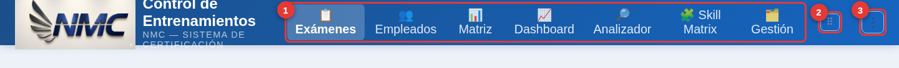</figure>
  <ol class="pts">
    <li><b class="n">1</b><span><strong>Pestañas</strong>: cambia de módulo con un clic.</span></li>
    <li><b class="n">2</b><span><strong>⠿ Reordenar</strong>: arrastra las pestañas al orden que prefieras.</span></li>
    <li><b class="n">3</b><span><strong>⋮ Menú</strong>: exportar, importar, formato y utilerías (ver <a href="#menu">Menú</a>).</span></li>
  </ol>
</section>

<section id="examenes">
  <h2><span class="ico">📋</span>Exámenes</h2>
  <p class="lead">Catálogo de exámenes y su nivel de cumplimiento.</p>
  <figure>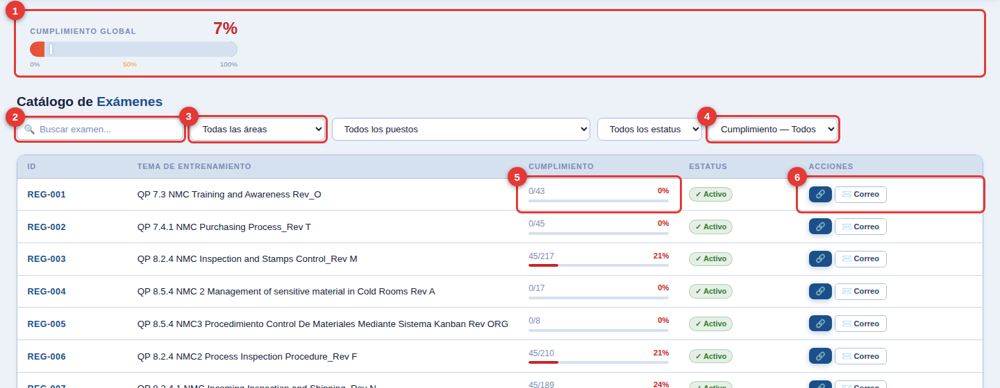</figure>
  <ol class="pts">
    <li><b class="n">1</b><span><strong>Cumplimiento global</strong> de todos los exámenes.</span></li>
    <li><b class="n">2</b><span><strong>Buscar</strong> por nombre del examen.</span></li>
    <li><b class="n">3</b><span><strong>Filtrar</strong> por área y puesto.</span></li>
    <li><b class="n">4</b><span><strong>Cumplimiento</strong>: con pendientes, 100 % aprobados o sin empleados.</span></li>
    <li><b class="n">5</b><span><strong>Barra</strong>: aprobados / asignados y porcentaje.</span></li>
    <li><b class="n">6</b><span><strong>🔗</strong> abre el formulario · <strong>Correo</strong> prepara el envío a los asignados.</span></li>
  </ol>
  <div class="note">Al filtrar por área o puesto aparece el botón <strong>✉️ Enviar correo con exámenes</strong>.</div>

  <h3>Detalle de un examen</h3>
  <figure>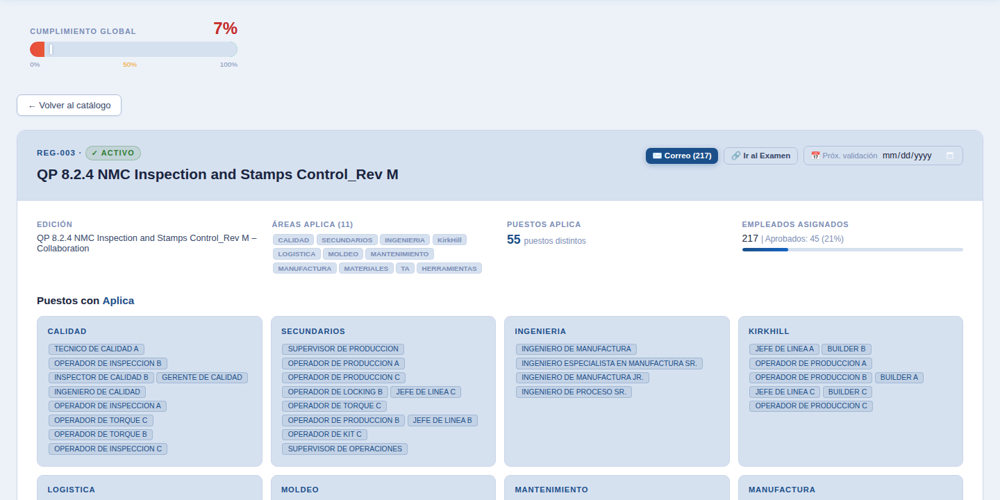</figure>
  <ul class="tips">
    <li>Clic en la fila del examen para abrir su detalle.</li>
    <li>Ve áreas, puestos y empleados asignados.</li>
    <li>Botones: <kbd>Correo</kbd>, <kbd>Ir al Examen</kbd> y <kbd>Próx. validación</kbd> (fecha).</li>
    <li><kbd>← Volver al catálogo</kbd> para regresar.</li>
  </ul>
</section>

<section id="empleados">
  <h2><span class="ico">👥</span>Empleados</h2>
  <p class="lead">Directorio del personal y su avance.</p>
  <figure>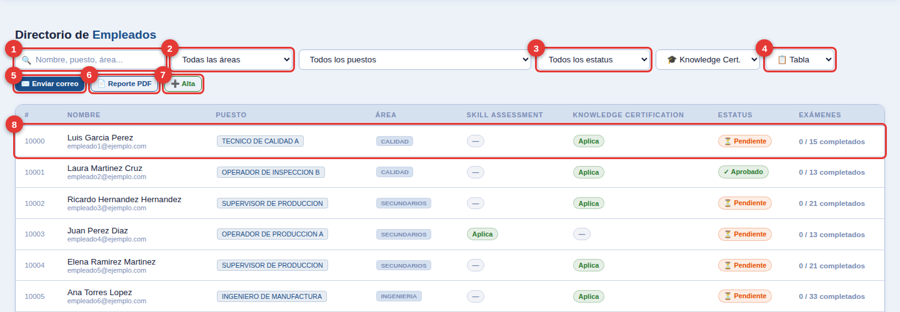</figure>
  <ol class="pts">
    <li><b class="n">1</b><span><strong>Buscar</strong> por nombre, puesto o área.</span></li>
    <li><b class="n">2</b><span><strong>Filtrar</strong> por área y puesto.</span></li>
    <li><b class="n">3</b><span><strong>Estatus</strong>: Aprobado, Pendiente, En Proceso, Inactivo, Suspendido.</span></li>
    <li><b class="n">4</b><span><strong>Vista</strong>: tabla o tarjetas.</span></li>
    <li><b class="n">5</b><span><strong>✉️ Enviar correo</strong> a los empleados filtrados.</span></li>
    <li><b class="n">6</b><span><strong>📄 Reporte PDF</strong> personalizado.</span></li>
    <li><b class="n">7</b><span><strong>➕ Alta</strong> de un empleado nuevo.</span></li>
    <li><b class="n">8</b><span><strong>Clic en la fila</strong> para abrir la ficha.</span></li>
  </ol>

  <h3>Ficha del empleado</h3>
  <div class="grid">
    <figure>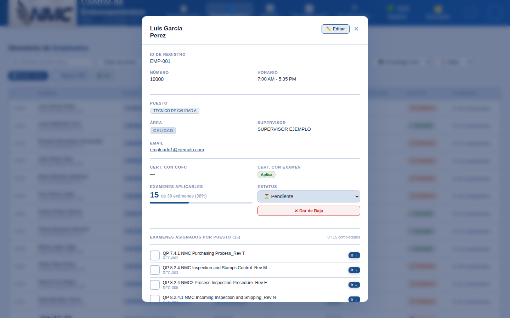</figure>
    <ul class="tips">
      <li><kbd>✏️ Editar</kbd> datos del empleado.</li>
      <li>Cambia el <strong>Estatus</strong> desde la lista.</li>
      <li>Marca ☑ los exámenes completados; <kbd>Ir →</kbd> abre el formulario.</li>
      <li><kbd>✕ Dar de Baja</kbd> para inactivar.</li>
      <li>Con estatus <strong>Aprobado</strong> aparece <kbd>🏅 Generar Certificado PDF</kbd>.</li>
    </ul>
  </div>

  <h3>Alta de personal y Reporte PDF</h3>
  <div class="grid even">
    <figure>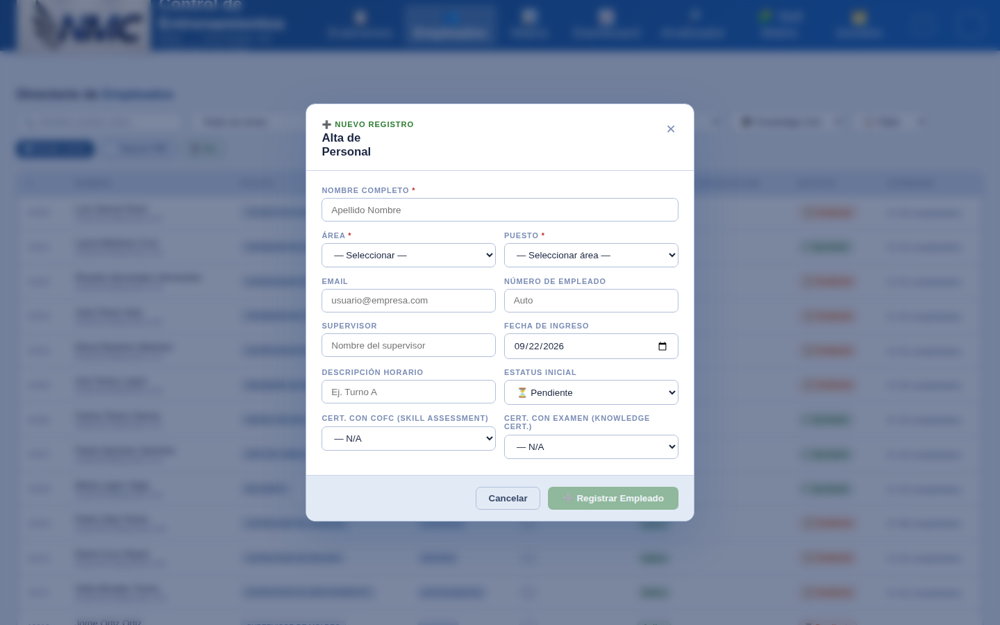</figure>
    <figure>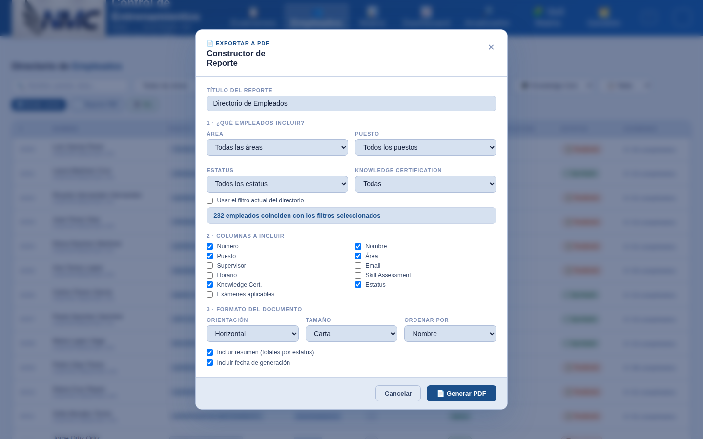</figure>
  </div>
  <div class="grid even">
    <ol class="steps">
      <li>Captura nombre, <strong>área</strong> y <strong>puesto</strong> (obligatorios).</li>
      <li>Completa correo, supervisor y certificaciones.</li>
      <li><kbd>Registrar Empleado</kbd>. Sus exámenes se asignan según el puesto.</li>
    </ol>
    <ol class="steps">
      <li>Elige qué empleados incluir (filtros).</li>
      <li>Marca las columnas.</li>
      <li>Define orientación, tamaño y orden → <kbd>Generar PDF</kbd>.</li>
    </ol>
  </div>
</section>

<section id="matriz">
  <h2><span class="ico">📊</span>Matriz Examen × Área</h2>
  <p class="lead">Qué examen aplica a cada área, de un vistazo.</p>
  <figure>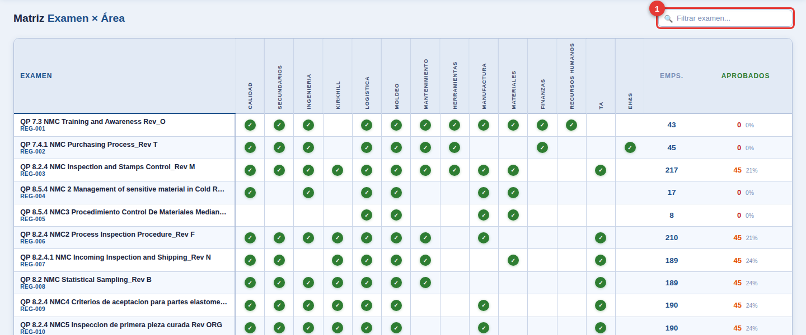</figure>
  <ol class="pts">
    <li><b class="n">1</b><span><strong>Filtrar examen</strong> por nombre.</span></li>
  </ol>
  <ul class="tips">
    <li>✓ verde = el examen aplica a esa área.</li>
    <li>Columnas finales: total de empleados y aprobados (%).</li>
    <li>Clic en una fila abre el detalle del examen.</li>
  </ul>
</section>

<section id="dashboard">
  <h2><span class="ico">📈</span>Dashboard KPI</h2>
  <p class="lead">Indicadores generales y gráficas por área.</p>
  <figure>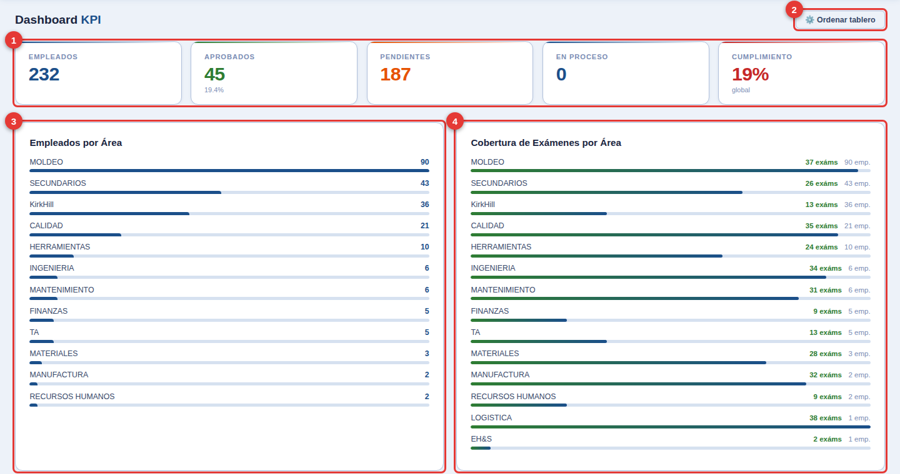</figure>
  <ol class="pts">
    <li><b class="n">1</b><span><strong>KPIs</strong>: empleados, aprobados, pendientes, en proceso y cumplimiento.</span></li>
    <li><b class="n">2</b><span><strong>⚙️ Ordenar tablero</strong>: arrastra, redimensiona u oculta paneles.</span></li>
    <li><b class="n">3</b><span><strong>Empleados por área</strong>.</span></li>
    <li><b class="n">4</b><span><strong>Cobertura de exámenes</strong> por área.</span></li>
  </ol>
  <div class="note">Más abajo: <strong>Aprobados vs Pendientes por área</strong>. Los KPIs ocultos se recuperan con <strong>👁 Mostrar todos</strong>.</div>
</section>

<section id="analizador">
  <h2><span class="ico">🔎</span>Analizador de formularios</h2>
  <p class="lead">Carga los resultados de Microsoft Forms y actualiza el avance automáticamente.</p>
  <figure>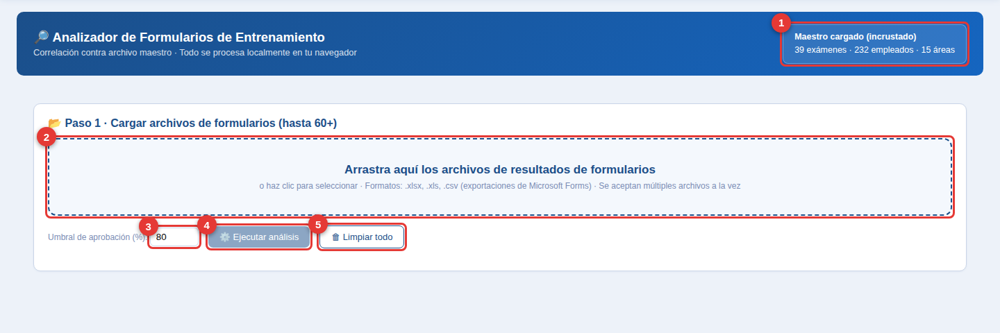</figure>
  <ol class="pts">
    <li><b class="n">1</b><span><strong>Maestro cargado</strong>: exámenes, empleados y áreas de referencia.</span></li>
    <li><b class="n">2</b><span><strong>Arrastra</strong> los archivos .xlsx / .xls / .csv (varios a la vez).</span></li>
    <li><b class="n">3</b><span><strong>Umbral</strong> de aprobación (80 % por defecto).</span></li>
    <li><b class="n">4</b><span><strong>⚙️ Ejecutar análisis</strong>.</span></li>
    <li><b class="n">5</b><span><strong>🗑 Limpiar todo</strong> para empezar de nuevo.</span></li>
  </ol>
  <div class="note">Al ejecutar, los exámenes completados se <strong>marcan solos</strong> en la ficha de cada empleado. Resultados en pestañas:</div>
  <div class="tabs"><span>📊 Resumen Ejecutivo</span><span>📖 Diccionario</span><span>🧹 Calidad de Datos</span><span>🔗 Maestro ↔ Formularios</span><span>📈 Estadísticas</span><span>🧮 Correlación</span><span>⚠️ Hallazgos</span><span>✅ Recomendaciones</span></div>
</section>

<section id="skill">
  <h2><span class="ico">🧩</span>Skill Matrix</h2>
  <p class="lead">Matriz Puestos × Exámenes por área, lista para imprimir en A3.</p>
  <figure>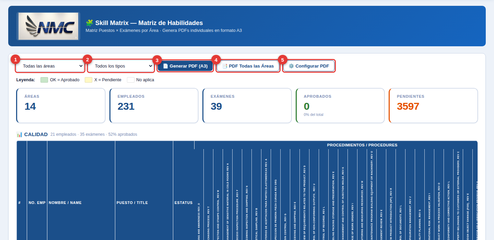</figure>
  <ol class="pts">
    <li><b class="n">1</b><span><strong>Área</strong> a mostrar.</span></li>
    <li><b class="n">2</b><span><strong>Tipo</strong>: Skill Assessment o Knowledge Certification.</span></li>
    <li><b class="n">3</b><span><strong>📄 Generar PDF (A3)</strong> del área filtrada.</span></li>
    <li><b class="n">4</b><span><strong>📑 PDF Todas las Áreas</strong>.</span></li>
    <li><b class="n">5</b><span><strong>⚙️ Configurar PDF</strong>: formato del documento.</span></li>
  </ol>
  <div class="note">Leyenda: <strong>OK</strong> = aprobado · <strong>X</strong> = pendiente · vacío = no aplica.</div>
</section>

<section id="gestion">
  <h2><span class="ico">🗂️</span>Gestión</h2>
  <p class="lead">Aquí se dan de alta exámenes y puestos, y se asignan entre sí.</p>
  <figure>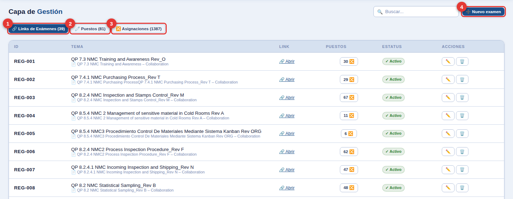</figure>
  <ol class="pts">
    <li><b class="n">1</b><span><strong>Links de Exámenes</strong>: ✏️ editar, 🗑️ borrar, 🔗 abrir.</span></li>
    <li><b class="n">2</b><span><strong>Puestos</strong> por área.</span></li>
    <li><b class="n">3</b><span><strong>Asignaciones</strong> examen ↔ puesto.</span></li>
    <li><b class="n">4</b><span><strong>➕ Nuevo examen</strong> (tema, link, estatus).</span></li>
  </ol>

  <h3>Puestos</h3>
  <figure>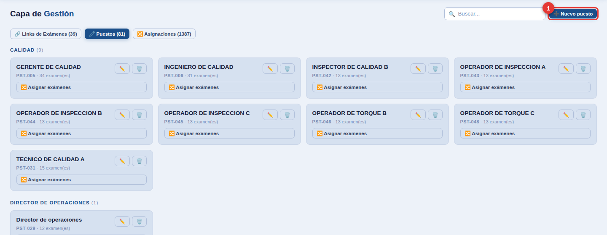</figure>
  <ol class="pts">
    <li><b class="n">1</b><span><strong>➕ Nuevo puesto</strong>. En cada tarjeta: ✏️, 🗑️ y <kbd>🔀 Asignar exámenes</kbd>.</span></li>
  </ol>

  <h3>Asignaciones</h3>
  <figure>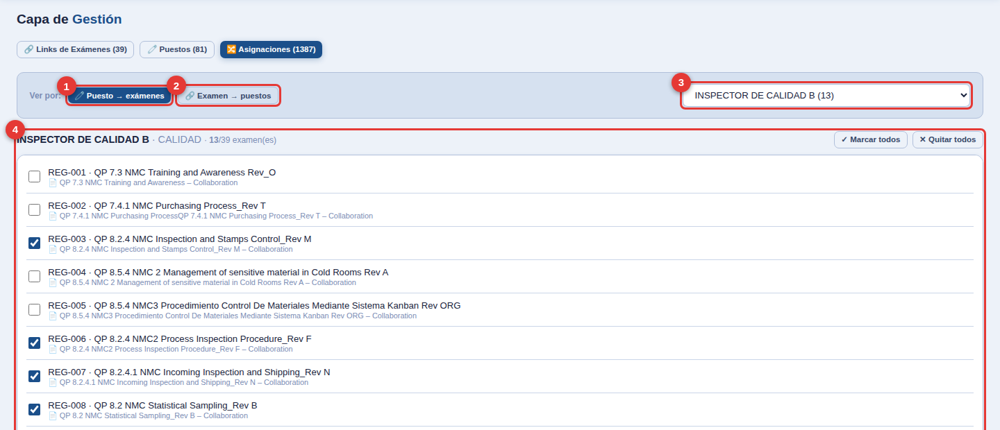</figure>
  <ol class="pts">
    <li><b class="n">1</b><span><strong>Puesto → exámenes</strong>.</span></li>
    <li><b class="n">2</b><span><strong>Examen → puestos</strong>.</span></li>
    <li><b class="n">3</b><span><strong>Selecciona</strong> el puesto o examen.</span></li>
    <li><b class="n">4</b><span><strong>Marca / desmarca</strong>. Usa <kbd>✓ Marcar todos</kbd> o <kbd>✕ Quitar todos</kbd>.</span></li>
  </ol>
  <div class="note">Los cambios se reflejan de inmediato en empleados, KPIs y matrices.</div>
</section>

<section id="menu">
  <h2><span class="ico">⋮</span>Menú de opciones</h2>
  <div class="grid">
    <figure class="narrow">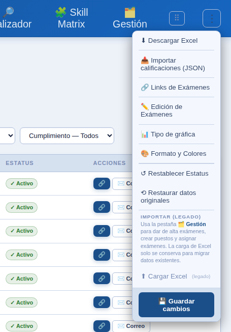</figure>
    <ul class="tips">
      <li><strong>⬇ Descargar Excel</strong>: exporta exámenes y empleados.</li>
      <li><strong>📥 Importar calificaciones (JSON)</strong> de un Analizador abierto por separado.</li>
      <li><strong>🔗 Links</strong> y <strong>✏️ Edición de Exámenes</strong>.</li>
      <li><strong>📊 Tipo de gráfica</strong> para KPIs y paneles.</li>
      <li><strong>🎨 Formato y Colores</strong>: tipografía, acento y fondo.</li>
      <li><strong>↺ Restablecer Estatus</strong> por área.</li>
      <li><strong>⟲ Restaurar datos originales</strong> (recarga la página).</li>
      <li><strong>⬆ Cargar Excel (legado)</strong>: solo para migrar datos.</li>
      <li><strong>💾 Guardar cambios</strong>: guarda la configuración visual.</li>
    </ul>
  </div>
  <h3>Formato y Colores</h3>
  <figure class="narrow">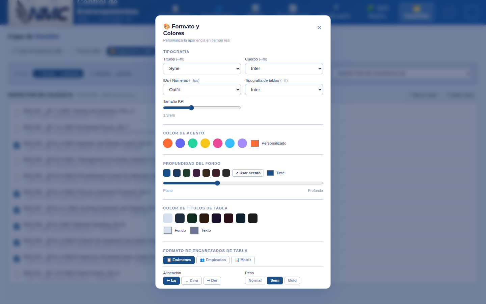</figure>
</section>

<section id="datos">
  <h2><span class="ico">💾</span>Dónde se guardan los datos</h2>
  <ul class="tips">
    <li>Todo se guarda <strong>en el navegador</strong> de esta computadora (localStorage).</li>
    <li>Otro equipo u otro navegador <strong>no verá</strong> tus cambios.</li>
    <li>Borrar datos de navegación <strong>elimina</strong> los cambios.</li>
    <li>Respaldo recomendado: <strong>⋮ → ⬇ Descargar Excel</strong> con regularidad.</li>
    <li>Exportar Excel/PDF requiere <strong>internet</strong> (librerías en línea).</li>
  </ul>
</section>

<footer>Capturas tomadas del sistema con nombres y correos de empleados reemplazados por datos de ejemplo.</footer>
</main>
